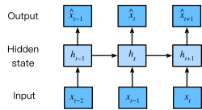

6 RNN
Recurrent Neural Networks (RNNs) are used for sequential data — signals, speech, text, financial time series where past values influence future ones. Their development is tightly linked to natural language processing.
If you want a compact lecture, watch the MIT Intro to Deep Learning segment on RNNs. For a structured, rigorous treatment, see the d2l.ai chapters on RNN. This writeup aims to be a primer for both.
6.0.1 Elevator pitch
Think of autoregressive models from statistics: predict the next value mainly from past observations. Given a sequence \((x_1,\dots,x_n)\) and observations up to time \(t-1\), we want \[ \mathbb{E}\big(x_t \mid x_{t-1},\dots,x_1\big). \]
A naive stats‑101 approach is linear regression, but that has practical issues: as time advances the number of predictors grows, and most interesting signals are nonlinear.
So how can we improve this first idea ? :
Fixed sliding window (use the last K values).
Instead of using a growing number of past values, use a fixed-size window of the last K observations (e.g., 2, 3, 5) as predictors for regression, or compute a summary (like the mean) over that window.Compress past into a summary statistic (mean, moving average).
Collapsing the history into a single summary (mean, median, moving average, etc.) produces a fixed-size predictor regardless of sequence length, avoiding the predictor-scaling problem.Combine both (rolling averages, exponentially weighted stats).
Use a fixed window plus a summary computed over that window (or an exponential weighting of all past observations) to get both locality and smoothed long-term information.
6.0.2 Latent autoregressive view
If we compress the past into a fixed‑size summary (a latent state) and use that to predict the next value, we get a latent autoregressive model. The latent state is not directly observed.
Write the model as \[ \hat{x}_t = P(x_t \mid h_t), \] with the state updated recurrently, for example \[ h_t = g(h_{t-1},\, x_{t-1}). \]
(The hat denotes a predicted quantity; un‑hatted symbols are observed.)

This formulation: a state that summarizes the past and is iteratively updated is the core idea behind RNNs.
6.0.3 How this maps to RNNs
- \(h_t\) is the hidden state (fixed-dimensional vector).
- \(g\) is a parametric update (for simple RNNs, \(g\) is an affine map followed by a nonlinearity).
- The output model \(P\) can be a simple linear layer or a more complex head (softmax for language, Gaussian for regression, etc.).
A simple vanilla RNN usually looks like this: \[ h_t = \phi\big(W_h h_{t-1} + W_x x_{t-1} + b\big), \qquad \hat{y}_t = W_y h_t + c, \] where \(\phi\) is a nonlinearity (tanh, ReLU), and \(W_h,W_x,W_y\) are learned weight matrices and \(b,c\) are optional biases.
If you have experience with Markov models, you can link them to a transition probability matrix. It was never written explicitly until now, but assuming that we can make a solid prediction by only looking at \(K\) values in the past is essentially assuming the process we’re interested in is a Markov process of order \(K\). This link is discussed in greater detail in the d2l.ai course.
6.0.4 Practical considerations and modern practice
RNNs are largely superseded in many applications, but still conceptually important.
- Vanilla RNNs suffer from vanishing/exploding gradients for long dependencies. Gated architectures (LSTM, GRU) mitigate this with learned gates that control information flow.
- For many NLP and sequence tasks, Transformer architectures have largely supplanted RNNs because they model long‑range dependencies more effectively and parallelize better.
6.0.5 Further reading/watching
As I said in the beginning, this is mainly intended as an introduction to RNN. I highly encourage you to watch this lecture MIT Intro to Deep Learning segment on RNNs and read the d2l.ai chapters on RNN to get a more formal understanding.